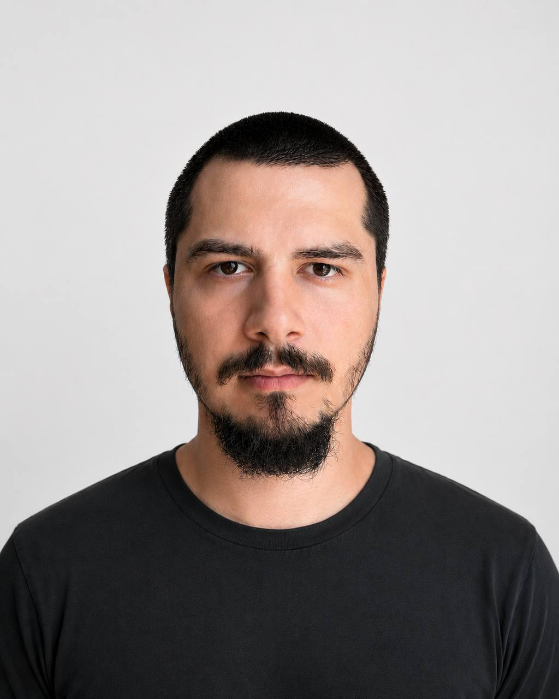

<!--
  Портфолио — UI-дизайн интерфейсов и вёрстка. RU/EN, десктоп-first.
  Один файл, без сборки. Весь контент правится в объекте DICT (ru / en):
    • DICT[lang].cases      — кейсы галереи (и содержимое модалки)
    • DICT[lang].principles — карточки блока «Принципы»
    • DICT[lang].steps/plans/scope/… — остальные секции
  Медиа кейсов — в CASE_MEDIA (общее для языков): пути к скринам + число плейсхолдеров.
  Язык по умолчанию — по языку браузера; тумблер RU/EN в доке; выбор запоминается.
-->
<html lang="ru">
<meta charset="utf-8">
<meta name="viewport" content="width=device-width, initial-scale=1">
<title>Омар Марданов — интерфейсы и вёрстка</title>
<link rel="icon" href="data:image/svg+xml,<svg xmlns='http://www.w3.org/2000/svg' viewBox='0 0 32 32'><rect width='32' height='32' fill='%23111'/><text x='16' y='22' font-family='Inter, system-ui, sans-serif' font-size='16' font-weight='500' letter-spacing='-1' text-anchor='middle' fill='%23fff'>ом</text></svg>">

<!-- SEO и превью ссылки в мессенджерах/соцсетях -->
<meta name="description" content="UI-дизайнер и верстальщик · UI designer & frontend developer. Проектирую продуктовые интерфейсы и собираю их в чистую семантичную вёрстку.">
<link rel="canonical" href="https://omarmardanov.github.io/">
<meta property="og:type" content="website">
<meta property="og:url" content="https://omarmardanov.github.io/">
<meta property="og:title" content="Омар Марданов — интерфейсы и вёрстка">
<meta property="og:description" content="Проектирую продуктовые интерфейсы, дашборды и лендинги — и собираю их в чистую семантичную вёрстку.">
<meta property="og:image" content="https://omarmardanov.github.io/avatar.jpg">
<meta name="twitter:card" content="summary">

<link rel="preconnect" href="https://fonts.googleapis.com">
<link rel="preconnect" href="https://fonts.gstatic.com" crossorigin>
<link href="https://fonts.googleapis.com/css2?family=Inter:wght@400;500&display=swap" rel="stylesheet">

<style>
  :root{
    --ink:#111;
    --mute:#8b8b8b;
    --line:#e6e6e6;
    --ph:#e9e9e9;          /* плейсхолдер скрина */
    --pad:32px;
    --max:1120px;
  }
  *{box-sizing:border-box}
  html{scroll-behavior:smooth}
  section{scroll-margin-top:40px}
  body{
    margin:0;
    background:#fff;
    color:var(--ink);
    font-family:"Inter", -apple-system, system-ui, sans-serif;
    font-size:13px;
    line-height:1.55;
    letter-spacing:-.01em;
    -webkit-font-smoothing:antialiased;
  }
  a{color:inherit;text-decoration:none}
  .wrap{max-width:var(--max);margin:0 auto;padding:0 var(--pad)}

  /* мелкая надпись-ярлык над каждой секцией */
  .label{
    font-size:11px;letter-spacing:.06em;text-transform:uppercase;
    color:var(--mute);margin-bottom:28px;
  }

  /* ── Плавающая панель внизу ─────────────────────────── */
  .dock{
    position:fixed;z-index:10;
    left:50%;bottom:24px;transform:translateX(-50%);
    display:flex;align-items:center;gap:6px;
    padding:6px;
    background:rgba(255,255,255,.82);
    backdrop-filter:blur(12px);
    border:1px solid var(--line);
    box-shadow:0 4px 24px rgba(0,0,0,.06);
  }
  .dock a.link{padding:8px 12px;color:var(--mute);white-space:nowrap}
  .dock a.link:hover{color:var(--ink)}
  /* Тумблер языка: текстовая кнопка в стиле ссылки, показывает второй язык */
  .dock .lang{padding:8px 12px;color:var(--mute);background:none;border:0;font:inherit;cursor:pointer;white-space:nowrap}
  .dock .lang:hover{color:var(--ink)}
  .cta{padding:8px 14px;font-weight:500;background:var(--ink);color:#fff;white-space:nowrap}
  .cta:hover{opacity:.85}

  /* ── Оффер ──────────────────────────────────────────── */
  .hero{padding-top:40px;padding-bottom:64px}
  .hero .top{display:flex;align-items:flex-start;gap:64px;margin-bottom:24px}
  .hero h1{
    font-size:34px;font-weight:400;line-height:1.25;letter-spacing:-.03em;
    margin:0;max-width:15em;
  }
  .hero h1 b{font-weight:500}
  /* 8px — компенсация leading у h1: верх квадрата по верху букв, а не бокса */
  .hero .who{flex:none;margin-left:auto;margin-top:8px;text-align:right}
  .hero .portrait{width:96px;aspect-ratio:1;background:var(--ph);margin-left:auto}
  .hero .portrait img{width:100%;height:100%;object-fit:cover;display:block}
  .hero .who .name{display:block;margin-top:10px;white-space:nowrap}
  .hero .who .desc{display:block;margin-top:2px;color:var(--mute);white-space:nowrap}
  .hero .cols{display:grid;grid-template-columns:1fr 1fr;gap:64px;max-width:760px}
  .hero p{margin:0;color:var(--mute);max-width:34em}
  .hero p b{color:var(--ink);font-weight:400}

  /* ── Галерея ────────────────────────────────────────── */
  .gallery{padding-bottom:120px}
  .grid{display:grid;grid-template-columns:repeat(3,1fr);column-gap:12px;row-gap:48px}
  .card{cursor:pointer;display:block;text-align:left;border:0;padding:0;background:none;font:inherit;color:inherit}
  .shot{aspect-ratio:16/10;background:var(--ph);overflow:hidden}
  .shot img{width:100%;height:100%;object-fit:cover;display:block}
  .card:hover .shot{opacity:.85}
  /* Подпись в две строки: название работы — чёрным, клиент/тип — серым.
     Обе прижаты влево, к своей карточке: при column-gap:12px правый край
     оказывался ближе к соседней. Объём и год — не здесь (год убран вовсе:
     все работы одного года, дата сообщала бы лишь отсутствие истории). */
  .card .meta{padding-top:10px}
  .card .meta .who{display:block;color:var(--mute);margin-top:2px}

  /* ── Что беру / что нет ─────────────────────────────── */
  .scope{padding-bottom:120px}
  .scope .cols{display:grid;grid-template-columns:1fr 1fr;gap:64px;max-width:860px}
  .scope h3{font-size:13px;font-weight:500;margin:0 0 16px}
  .scope ul{margin:0;padding:0;list-style:none}
  .scope li{padding:10px 0;border-top:1px solid var(--line)}
  .scope .no li,.scope .no h3{color:var(--mute)}
  .scope .why{margin:28px 0 0;color:var(--mute);max-width:36em}
  .scope .why b{color:var(--ink);font-weight:500}

  /* ── Принципы ───────────────────────────────────────── */
  .how{padding-bottom:120px}
  .cards{
    margin:0;padding:0;
    display:grid;grid-template-columns:repeat(4,1fr);gap:1px;
    background:var(--line);border:1px solid var(--line);
  }
  .cards li{list-style:none;background:#fff;padding:28px 24px 32px}
  .cards svg{display:block;margin-bottom:36px;stroke:var(--ink);fill:none;stroke-width:1}
  .cards h3{font-size:13px;font-weight:500;margin:0 0 8px}
  .cards p{margin:0;color:var(--mute)}

  /* ── Как проходит работа ────────────────────────────── */
  .process{padding-bottom:120px}
  .steps{margin:0 0 48px;padding:0;list-style:none;max-width:760px}
  .steps li{display:grid;grid-template-columns:32px 1fr;gap:24px;padding:20px 0;border-top:1px solid var(--line)}
  .steps .n{color:var(--mute)}
  .steps h3{font-size:13px;font-weight:500;margin:0 0 4px}
  .steps p{margin:0;color:var(--mute);max-width:34em}
  .steps .def{margin-top:12px;padding-left:14px;border-left:1px solid var(--line)}
  .steps .def b{color:var(--ink);font-weight:500}
  .fix{max-width:760px;color:var(--mute)}
  .fix b{color:var(--ink);font-weight:500}
  .fix p{margin:0 0 12px}
  .fix p:last-child{margin-bottom:0}

  /* ── Цены ───────────────────────────────────────────── */
  .pricing{padding-bottom:120px}
  .plans{
    margin:0 0 24px;padding:0;list-style:none;
    display:grid;grid-template-columns:repeat(3,1fr);gap:1px;
    background:var(--line);border:1px solid var(--line);
  }
  .plans li{background:#fff;padding:28px 24px 32px}
  .plans h3{font-size:13px;font-weight:500;margin:0 0 24px}
  .plans .sum{font-size:24px;letter-spacing:-.02em;display:block;margin-bottom:2px}
  .plans .per{color:var(--mute);display:block;margin-bottom:20px}
  .plans p{margin:0;color:var(--mute)}
  .pricing .note{margin:0;color:var(--mute);max-width:36em}

  /* ── Доверие: закрывает страницу, футера нет ────────── */
  /* 120px снизу — запас, чтобы .dock не накрыл строку контактов */
  .trust{border-top:1px solid var(--line);padding:64px 0 120px}
  .trust .cols{display:grid;grid-template-columns:1fr 1fr;gap:64px}
  .trust h2{font-size:22px;font-weight:400;letter-spacing:-.02em;line-height:1.35;margin:0;max-width:14em}
  .trust p{margin:0 0 16px;color:var(--mute)}
  .contacts{display:flex;gap:24px;margin-top:32px}
  .contacts a:hover{color:var(--mute)}
  /* год прижат к низу левой колонки — встаёт по нижней кромке правой */
  .trust .claim{display:flex;flex-direction:column}
  .year{margin-top:auto;padding-top:28px;color:var(--mute)}

  /* ── Модалка кейса ──────────────────────────────────── */
  /* Панель, а не полный экран. Рамка и тень — как у дока:
     белое на почти белом фоне иначе не читается как объект. */
  dialog{
    border:1px solid var(--line);padding:0;color:var(--ink);
    width:min(920px, calc(100% - 64px));
    max-height:calc(100% - 96px);
    margin:auto;background:#fff;overflow-y:auto;
    box-shadow:0 4px 24px rgba(0,0,0,.06);
  }
  dialog::backdrop{background:rgba(255,255,255,.9)}

  /* Появление панели. display у <dialog> переключается дискретно,
     поэтому нужны allow-discrete и @starting-style. Где их нет —
     панель просто появляется мгновенно, как раньше.
     Прозрачность коротко, движение долго — не наоборот. Иначе панель
     доезжает на место, пока она ещё невидима, движения никто не видит,
     и остаётся только резко проступающий текст. */
  dialog{
    transition:opacity .2s ease,
               transform .34s cubic-bezier(0,0,.58,1),
               overlay .34s allow-discrete, display .34s allow-discrete;
  }
  /* НЕ РАБОТАЕТ: opacity у ::backdrop не анимируется — замерено,
     подложка появляется мгновенно. Чинится переходом background-color
     от rgba(255,255,255,0) вместо opacity. Пока оставлено как есть. */
  dialog::backdrop{
    transition:opacity .3s ease,
               overlay .3s allow-discrete, display .3s allow-discrete;
  }
  dialog{opacity:1;transform:translateY(0) scale(1)}
  /* Уход быстрее прихода и целиком, без раздельных таймингов. */
  dialog:not([open]){
    opacity:0;transform:translateY(16px) scale(.985);
    transition:opacity .2s ease, transform .2s ease,
               overlay .2s allow-discrete, display .2s allow-discrete;
  }
  dialog:not([open])::backdrop{transition-duration:.2s}
  @starting-style{
    dialog[open]{opacity:0;transform:translateY(16px) scale(.985)}
    dialog[open]::backdrop{opacity:0}
  }
  dialog[open]::backdrop{opacity:1}
  dialog:not([open])::backdrop{opacity:0}

  /* Системная настройка «меньше движения» — уважаем. */
  @media (prefers-reduced-motion:reduce){
    html{scroll-behavior:auto}
    dialog, dialog::backdrop{transition:none}
    dialog:not([open]){transform:none}
  }

  .close{
    position:absolute;top:20px;right:24px;
    border:0;background:none;font:inherit;color:var(--mute);cursor:pointer;padding:0;
  }
  .close:hover{color:var(--ink)}
  /* Автофокус уведён на .modal-body (autofocus + tabindex="-1"),
     иначе <dialog> фокусит ✕ и Chrome рисует на нём кольцо. */
  .modal-body:focus{outline:none}
  /* Боковые отступы здесь, а не от .wrap: панель уже 920px,
     max-width:1120px у .wrap ничего не ограничивает. */
  .modal-body{padding:56px 48px 64px}
  .m-kind{
    display:block;margin-bottom:28px;
    font-size:11px;letter-spacing:.06em;text-transform:uppercase;color:var(--mute);
  }
  .modal-body h2{font-size:26px;font-weight:400;letter-spacing:-.025em;margin:0;max-width:16em}
  /* Заголовок слева, кнопка «Открыть сайт» — у правого края напротив него */
  .m-head{display:flex;flex-wrap:wrap;justify-content:space-between;align-items:flex-start;gap:16px 24px;margin:0 0 40px}
  /* Кнопка «Открыть сайт» — показывается из JS, если у кейса задан url */
  .m-visit{
    display:none;align-items:center;gap:8px;flex:none;
    padding:11px 16px;
    border:1px solid var(--line);color:var(--ink);font:inherit;
    transition:border-color .15s;
  }
  .m-visit:hover{border-color:var(--ink)}
  .m-visit svg{stroke:currentColor;fill:none;stroke-width:1}
  .modal-body .cols{display:grid;grid-template-columns:1fr 1fr;gap:64px;margin-bottom:56px}
  .modal-body dt{font-size:11px;letter-spacing:.06em;text-transform:uppercase;color:var(--mute);margin-bottom:10px}
  .modal-body dd{margin:0 0 24px}
  .modal-body dd:last-child{margin-bottom:0}
  .shots{display:grid;grid-template-columns:repeat(2,1fr);gap:12px}
  .shots .shot{aspect-ratio:4/3;border:1px solid var(--line)}
  /* ── Адаптив ────────────────────────────────────────────
     Точки выбраны по контенту, а не по устройствам:
     900px — четыре карточки принципов перестают влезать в ряд;
     640px — две колонки текста становятся уже 20 знаков. */

  @media (max-width:900px){
    .grid{grid-template-columns:repeat(2,1fr)}
    .cards{grid-template-columns:repeat(2,1fr)}
    .plans{grid-template-columns:1fr}
    .hero h1{max-width:none}
  }

  @media (max-width:640px){
    :root{--pad:20px}
    .hero{padding-top:32px;padding-bottom:48px}
    .hero h1{font-size:26px}
    /* Портрет уходит под заголовок: оффер важнее лица. */
    .hero .top{display:block;margin-bottom:32px}
    .hero .who{margin:24px 0 0;text-align:left}
    .hero .portrait{margin-left:0}
    .hero .cols,
    .scope .cols,
    .trust .cols,
    .modal-body .cols{grid-template-columns:1fr;gap:32px}

    .gallery,.scope,.how,.process,.pricing{padding-bottom:72px}
    .grid{grid-template-columns:1fr;row-gap:36px}
    /* Принципы остаются 2×2 — швы сетки держат блок таблицей */
    .cards li{padding:24px 18px 26px}
    .cards svg{margin-bottom:24px}

    /* Год встаёт последним, после контактов, а не между h2 и прозой. */
    .trust{padding:48px 0 96px}
    .trust .claim{display:contents}
    .trust h2{order:1}
    .trust .cols > div:not(.claim){order:2}
    .year{order:3;margin-top:32px;padding-top:0}
    .contacts{flex-wrap:wrap;gap:14px 20px}

    /* Док схлопывается: ссылки прячем, остаются тумблер языка и CTA.
       Оправа дока не нужна — каждый оставшийся элемент несёт свою. */
    .dock{
      padding:0;border:0;background:none;
      backdrop-filter:none;box-shadow:none;
    }
    .dock a.link{display:none}
    .cta{padding:12px 20px;box-shadow:0 4px 24px rgba(0,0,0,.12)}
    .dock .lang{
      padding:12px 16px;
      background:rgba(255,255,255,.82);
      backdrop-filter:blur(12px);
      border:1px solid var(--line);
      box-shadow:0 4px 24px rgba(0,0,0,.12);
    }

    /* Модалка на весь экран. Отступ в 12px не читался как рамка,
       но обещал закрытие тапом мимо панели — попасть было некуда. */
    /* max-width снимаем: у <dialog> он задан браузером (100% - 2em).
       transform:none обязателен: любой transform у предка превращает
       position:fixed у ✕ в absolute, и кнопка уезжает при прокрутке.
       Подъём тут всё равно оголил бы белую полосу — остаётся проявление. */
    dialog{
      width:100%;height:100%;max-width:none;max-height:none;
      margin:0;border:0;box-shadow:none;transform:none;
    }
    dialog:not([open]){transform:none}
    @starting-style{ dialog[open]{transform:none} }

    /* Единственный способ закрыть: фона нет, Esc нет, «назад» уводит
       со страницы. Поэтому ✕ прибит к вьюпорту и не уезжает при
       прокрутке. Подложка — как у дока, иначе он утонет в светлом скрине. */
    .close{
      position:fixed;top:12px;right:12px;z-index:1;
      width:36px;height:36px;
      display:flex;align-items:center;justify-content:center;
      background:rgba(255,255,255,.82);
      backdrop-filter:blur(12px);
      border:1px solid var(--line);
    }
    .modal-body{padding:60px 20px 40px}
    .modal-body h2{font-size:22px}
    .shots{grid-template-columns:1fr}
  }
</style>

<nav class="dock">
  <a class="link" href="#works" data-i18n="nav.works"></a>
  <a class="link" href="#scope" data-i18n="nav.scope"></a>
  <a class="link" href="#process" data-i18n="nav.process"></a>
  <a class="link" href="#pricing" data-i18n="nav.pricing"></a>
  <button class="lang" id="lang" type="button"></button>
  <a class="cta" href="#contacts" data-i18n="nav.cta"></a>
</nav>

<main>
  <section class="hero wrap">
    <div class="top">
      <h1 data-i18n="hero.h1"></h1>
      <div class="who">
        <div class="portrait"></div>
        <span class="name" data-i18n="hero.name"></span>
        <span class="desc" data-i18n="hero.desc"></span>
      </div>
    </div>
    <div class="cols">
      <p data-i18n="hero.p1"></p>
      <p data-i18n="hero.p2"></p>
    </div>
  </section>

  <section class="gallery wrap" id="works">
    <div class="label" data-i18n="label.works"></div>
    <div class="grid" id="grid"></div>
  </section>

  <section class="scope wrap" id="scope">
    <div class="label" data-i18n="label.scope"></div>
    <div class="cols">
      <div>
        <h3 data-i18n="scope.yesTitle"></h3>
        <ul id="scope-yes"></ul>
      </div>
      <div class="no">
        <h3 data-i18n="scope.noTitle"></h3>
        <ul id="scope-no"></ul>
      </div>
    </div>
    <p class="why" data-i18n="scope.why"></p>
  </section>

  <section class="how wrap" id="method">
    <div class="label" data-i18n="label.principles"></div>
    <ul class="cards" id="cards"></ul>
  </section>

  <section class="process wrap" id="process">
    <div class="label" data-i18n="label.process"></div>
    <ol class="steps" id="steps"></ol>
    <div class="fix" id="fix"></div>
  </section>

  <section class="pricing wrap" id="pricing">
    <div class="label" data-i18n="label.pricing"></div>
    <ul class="plans" id="plans"></ul>
    <p class="note" data-i18n="pricing.note"></p>
  </section>

  <section class="trust" id="contacts">
    <div class="wrap cols">
      <div class="claim">
        <h2 data-i18n="trust.h2"></h2>
        <div class="year" data-i18n="trust.year"></div>
      </div>
      <div>
        <p data-i18n="trust.p1"></p>
        <p data-i18n="trust.p2"></p>
        <div class="contacts">
          <a href="https://t.me/omarmardanov">Telegram</a>
          <a href="mailto:omarmardanov@gmail.com">omarmardanov@gmail.com</a>
        </div>
      </div>
    </div>
  </section>
</main>

<dialog id="modal">
  <button class="close" id="m-close" aria-label="Закрыть">✕</button>
  <div class="modal-body" tabindex="-1" autofocus>
    <span class="m-kind" id="m-kind"></span>
    <div class="m-head">
      <h2 id="m-title"></h2>
      <a class="m-visit" id="m-visit" target="_blank" rel="noopener noreferrer">
        <span id="m-visit-label"></span>
        <svg width="14" height="14" viewBox="0 0 28 28"><path d="M8 20 L20 8 M11 8 H20 V17"/></svg>
      </a>
    </div>
    <div class="cols">
      <dl>
        <dt data-i18n="modal.labels.task"></dt><dd id="m-task"></dd>
      </dl>
      <dl>
        <dt data-i18n="modal.labels.solution"></dt><dd id="m-solution"></dd>
        <dt data-i18n="modal.labels.result"></dt><dd id="m-result"></dd>
      </dl>
    </div>
    <div class="shots" id="m-shots"></div>
  </div>
</dialog>

<script>
  // ── Общее для языков ──────────────────────────────────
  // Иконки принципов — inline SVG 28×28, обводка 1px, без заливки.
  const PRINCIPLE_ICONS = [
    '<path d="M4 4h20v20H4z"/><path d="M14 4v20M4 14h20"/>',                                  // сетка
    '<path d="M6 22L14 5l8 17"/><path d="M9.5 16h9"/>',                                       // типографика
    '<path d="M14 3l11 5.5-11 5.5L3 8.5z"/><path d="M3 14l11 5.5L25 14"/><path d="M3 19.5l11 5.5 11-5.5"/>', // состояния
    '<path d="M15 3L6 16h7l-1 9 10-13h-7z"/>',                                                // доступность/скорость
  ];
  // ╭─ КАК ДОБАВИТЬ КЕЙС ──────────────────────────────────────────────╮
  // │ Один кейс = запись в ТРЁХ массивах на ОДНОЙ И ТОЙ ЖЕ позиции:     │
  // │   1) CASE_MEDIA        — медиа (общее для языков)                 │
  // │   2) DICT.ru.cases     — тексты по-русски                        │
  // │   3) DICT.en.cases     — тексты по-английски                     │
  // │ Форматы:                                                         │
  // │   media: { img:'shots/cover.jpg',                                │
  // │            shots:['shots/1.jpg','shots/2.jpg'],                   │
  // │            url:'https://...' }                                   │
  // │          img — обложка карточки (пусто → серый плейсхолдер);      │
  // │          shots — массив путей к скринам ИЛИ число плейсхолдеров;  │
  // │          url — живой прод (опц.): в модалке появится «Открыть     │
  // │                сайт». Нет поля — кнопки нет.                      │
  // │   text:  { title:'Название', client:'Клиент · тип',              │
  // │            task:'…', solution:'…', result:'…' }                   │
  // │ Порядок записей должен совпадать во всех трёх массивах.           │
  // │ Разметку, модалку и типографику трогать не нужно — подхватятся.   │
  // ╰──────────────────────────────────────────────────────────────────╯
  // Медиа кейсов — единый источник для обоих языков.
  // img: путь к обложке (пусто → серый плейсхолдер). shots: пути к скринам или их число.
  const CASE_MEDIA = [
    { img:'cases/1tm/cover.jpg', shots:['cases/1tm/shot1.jpg','cases/1tm/shot2.jpg','cases/1tm/shot3.jpg','cases/1tm/shot4.jpg','cases/1tm/shot5.jpg'], url:'https://omarmardanov.github.io/1tm/' },   // 1ТМ — сайт юридической фирмы
    { img:'', shots:4 },
    { img:'', shots:4 },
    { img:'', shots:4 },
    { img:'', shots:4 },
    { img:'', shots:4 },
    { img:'', shots:4 },
  ];

  // 1 экран · 2–4 экрана · 5–20 экранов · 21 экран …
  function pluralRu(n, one, few, many){
    const t = Math.abs(n) % 100, d = t % 10;
    if (t > 10 && t < 20) return many;
    if (d > 1 && d < 5) return few;
    if (d === 1) return one;
    return many;
  }

  // ── Микротипографика: неразрывные пробелы ─────────────
  // Вставляем реальный символ   (а не &nbsp;), чтобы работало
  // и в innerHTML, и в textContent модалки. Чиним: висячие предлоги/
  // союзы в конце строки, отрыв числа от слова/разряда, тире в начале
  // строки. Прогоняем все строки при рендере — тексты в DICT остаются
  // чистыми, без разметки пробелов вручную.
  function typo(s){
    if (!s) return s;
    s = s.replace(/ — /g, ' — ');       // тире держим при предыдущем слове
    s = s.replace(/(\d) (?=\S)/g, '$1 ');         // 320 px, 15 минут, разряды 1 800
    s = s.replace(/([©№$€]) /g, '$1 '); // © 2026, № 5, € 5
    const re = currentLang === 'ru'
      ? /(?<=^|[\s(«„"“])([а-яёА-ЯЁ]{1,2}|без|для|над|под|при|про|что|как|чем|или|либо|если|чтобы|ведь|уже) /g
      : /(?<=^|[\s("'“‘«])(a|an|the|to|of|in|on|at|is|it|as|or|and|for|but|[A-Za-z]{1,2}) /gi;
    return s.replace(re, '$1 ');
  }

  // ── Словарь контента ──────────────────────────────────
  const DICT = {
    ru: {
      title: 'Омар Марданов — интерфейсы и вёрстка',
      nav: { works:'Работы', scope:'Что беру', process:'Как проходит работа', pricing:'Цены', cta:'Связаться' },
      label: { works:'Работы', scope:'Что беру', principles:'Принципы', process:'Как проходит работа', pricing:'Цены' },
      hero: {
        h1: 'Интерфейсы для продуктов — <b>спроектированы и собраны в чистый код.</b>',
        name: 'Омар Марданов',
        desc: 'проектирую и верстаю интерфейсы',
        p1: 'Продуктовые интерфейсы, дашборды и лендинги — для веба и приложений. Проектирую экраны и сразу собираю их в семантичную адаптивную вёрстку. Работаю в связке с ИИ: <b>Claude</b> — для логики, текстов и кода, <b>DALL·E</b> — для изображений; поэтому быстрее и точнее, без потери контроля над результатом.',
        p2: '<b>Приходите с задачей, а не с макетом.</b> Скрин, ссылка на конкурента, голосовое «хочу как здесь, но под нас». Структуру, сетку и состояния придумаю я — вам не нужно знать слова «флекс» и «токены».',
      },
      scope: {
        yesTitle: 'Беру',
        yes: ['Продуктовые интерфейсы и дашборды','Лендинги и промо-страницы','Дизайн-системы и UI-киты','Адаптивную семантичную вёрстку'],
        noTitle: 'Не беру',
        no: ['Логотипы и фирменный стиль','Иллюстрации и сложную графику','Бэкенд и серверную логику','Моушн-дизайн и анимационные ролики','SEO и маркетинговое продвижение'],
        why: '<b>Логотип и айдентику я не беру осознанно.</b> Это отдельная профессия, и есть люди, которые делают её лучше меня. Я нужен там, где интерфейс надо продумать: структура, сетка, состояния, поведение на разных экранах. Макет отрисую отлично — а вот бэкенд и сложную анимацию отдам тем, кто на них специализируется. Я собираю фронтенд и передаю чистый, семантичный код, который не стыдно поддерживать.',
      },
      principles: [
        { title:'Сетка', text:'Всё стоит на сетке. Модульная система, ритм и выравнивание держат интерфейс лучше украшений.' },
        { title:'Типографика', text:'Читаемость первична. Иерархия, межстрочный ритм и мера строки задают порядок и тон.' },
        { title:'Состояния', text:'Проектирую не экран, а все его состояния: пусто, загрузка, ошибка, длинный текст, край данных.' },
        { title:'Доступность и скорость', text:'Семантика, контраст, клавиатура и лёгкий код. Быстро и одинаково хорошо для всех.' },
      ],
      steps: [
        { title:'Задача', text:'Присылаете что есть: бриф, ссылку, скрин, видео, голосовое. Или описываете словами. Пятнадцать минут — и я понимаю объём.' },
        { title:'Структура и прототип', text:'Карта экранов и черновой прототип в низкой детализации. Согласуем логику и сценарии до отрисовки. Дальше — два круга правок, они уже в цене.',
          defs:[
            '<b>Круг правок</b> — один список замечаний целиком, сколько бы пунктов в нём ни было. «Кнопку выше, отступ меньше, состояние ошибки заметнее» — это один круг, а не три.',
            '<b>Правка</b> — изменение внутри согласованной структуры: сетка, состояние, поведение, положение блока. <b>Новый экран</b> — другая задача или другой сценарий; он считается отдельным экраном и оплачивается отдельно.',
          ] },
        { title:'Дизайн и система', text:'Рисую интерфейс на сетке, собираю токены и компоненты. Утверждаем ключевые экраны, состояния и правила.' },
        { title:'Вёрстка и выдача', text:'Собираю семантичную адаптивную вёрстку, проверяю состояния и браузеры. Отдаю код и короткую документацию по компонентам.' },
      ],
      fix: [
        '<b>До старта фиксируем письменно:</b> состав экранов, сроки и сумму.',
        '<b>Права.</b> Макеты и код ваши после оплаты — используйте где угодно и сколько угодно. Я не перепродаю их и не отдаю в шаблоны. Показываю в портфолио — если вы не против.',
        '<b>Срок</b> называю, когда увижу задачу. Обещать «за два дня» не зная объёма — способ его сорвать.',
      ],
      plans: [
        { title:'Экран', sum:'от $150', per:'за экран', text:'Один экран или секция под ключ: дизайн и вёрстка. Способ проверить меня на небольшой задаче.' },
        { title:'Лендинг', sum:'от $800', per:'за страницу', text:'Посадочная целиком: структура, дизайн и адаптивная семантичная вёрстка.' },
        { title:'Продукт под ключ', sum:'от $1 800', per:'за проект', text:'Интерфейс целиком: проектирование, дизайн-система и вёрстка компонентов.' },
      ],
      pricing: { note:'Готовый шаблон стоит дёшево — и выглядит как готовый шаблон. Дизайн-система и сопровождение — по договорённости; точную оценку даю, когда увижу задачу.' },
      trust: {
        h2: 'Обычно за этим идут к дизайнеру и отдельно к верстальщику — и теряют смысл на стыке.',
        p1: 'Шаблон сделан не под вас и уже стоит у десятка конкурентов. Дизайн без вёрстки застревает в макете; вёрстка без дизайна разъезжается на втором экране.',
        p2: 'Я держу и макет, и код в одной голове: решаю сетку, состояния и поведение один раз — и отдаю готовый интерфейс, а не набор красивых картинок.',
        year: '© 2026',
      },
      modal: { labels:{ task:'Задача', solution:'Решение', result:'Результат' }, close:'Закрыть', visit:'Открыть сайт' },
      kind: (n) => n === 1 ? 'Экран' : `Кейс, ${n} ${pluralRu(n, 'экран', 'экрана', 'экранов')}`,
      cases: [
        { title:'Сайт юридической фирмы', client:'1ТМ · «Галифанов, Мальков и партнёры»',
          task:'Патентное бюро выросло в полноценную юридическую фирму, но сайт остался с плоским списком из 18 услуг без группировки. Разнородную экспертизу — от товарных знаков до банкротства и налогов — было тяжело охватить, а бизнесу — понять, с чего начать.',
          solution:'Пересобрал структуру в четыре направления с разделами и услугами — с учётом ключевого требования заказчика сохранить позиции в поиске: рабочие URL и семантику оставил на месте, чтобы переиндексация прошла без просадки в выдаче, а реструктуризация — безболезненно. Спроектировал редакционный интерфейс на дизайн-системе: крупный serif и строгий sans, один тёплый акцент, воздух и хайрлайны. Сверстал всё на ванильном HTML/CSS/JS без сборщика — от главной до шаблонов страниц услуг, из которых собираются сотни страниц в WordPress.',
          result:'Каталог стал обозримым: четыре направления вместо списка из 18 пунктов, единая система компонентов, адаптив от телефона до десктопа. Фронтенд передан разработчику готовыми шаблонами — новые страницы собираются без дизайнера.' },
        { title:'Кабинет аналитики для SaaS', client:'Аналитика «Пульс»',
          task:'Метрики жили на трёх разных экранах, и пользователи уходили в выгрузки вместо того, чтобы читать их в продукте.',
          solution:'Собрал единый дашборд на 12-колоночной сетке: приоритет по частоте задач, конфигурируемые виджеты и продуманные состояния пусто/загрузка/ошибка.',
          result:'Ключевые метрики уместились в один экран без прокрутки. Меньше выгрузок, быстрее вход в данные.' },
        { title:'Сценарии оплаты для платёжного сервиса', client:'Платёжный сервис · под NDA',
          task:'Сервис подключает мерчантам широкий набор способов оплаты, но касса была разрозненной: каждый метод — card2card, СБП, оплата на баланс телефона, 1-click, QR, платёж на юрлицо — жил отдельным экраном со своей логикой и несогласованными состояниями. Больше всего людей терялось на выборе метода и на шаге ожидания перевода: непонятно, что происходит, нет таймера, ошибки без объяснений.',
          solution:'Спроектировал единый платёжный поток, где выбор метода, ввод и подтверждение — один предсказуемый сценарий. Собрал общую систему состояний для всех методов: ожидание перевода с таймером и авто-проверкой, копирование реквизитов в один тап, понятные ошибки и повторная попытка, дедлайн платежа, статусы «зачислено / не найдено». Отдельно проработал самые хрупкие места — подтверждение суммы «до копейки» в card2card, ожидание пуша по СБП, поведение при таймауте и повторной оплате. Спроектировал онбординг и пошаговые инструкции по каждому методу — как и куда переводить, что важно не перепутать: в этом сегменте люди часто платят незнакомым способом, и понятная инструкция напрямую влияет на долю успешных оплат. Работал сразу под несколько рынков — Казахстан, Кыргызстан, Азербайджан, Узбекистан, Индию и Бангладеш: где-то адаптировал существующий поток под локальные методы, валюты и язык, а где-то проектировал отдельные сценарии и экраны под специфику страны. Все методы — на одном UI-ките, адаптив от 320 px.',
          result:'Оплата стала одинаково понятной на любом методе и рынке: видно, что делать, сколько ждать и что пошло не так. Доля доведённых до конца оплат выросла с 64% до 81%, отвал на шаге выбора метода снизился примерно на треть, обращений «завис платёж» в поддержку стало заметно меньше. Единая система состояний позволяет быстро разворачивать новый метод или целую страну из готовых блоков — без переизобретения экранов.' },
        { title:'Лендинг запуска продукта', client:'Сервис «Обод»',
          task:'Нужна быстрая посадочная под запуск: смысл, оффер, форма — без тяжёлого стека.',
          solution:'Дизайн и семантичная вёрстка на чистом HTML, CSS и JS. Модульные секции, адаптив от 320 px, ленивые изображения.',
          result:'Лёгкая страница, быстрая загрузка и правка контента прямо в разметке, без сборки.' },
        { title:'Дизайн-система для B2B', client:'Платформа «Каркас»',
          task:'Каждый экран рисовали заново, компоненты расходились между командами и продуктами.',
          solution:'Собрал токены, сетку и UI-кит: типографика, состояния и компоненты с задокументированными правилами. Связал макет с кодом.',
          result:'Единый язык интерфейса. Новые экраны собираются из готовых блоков без расхождений.' },
        { title:'Мобильный каталог магазина', client:'Магазин «Полка»',
          task:'Каталог не был рассчитан на телефоны: мелкие цели нажатия и съезжающая сетка.',
          solution:'Пересобрал сетку и карточки mobile-first, крупные тач-цели, аккуратные состояния корзины и оптимизацию изображений.',
          result:'Каталог удобно листать с телефона; вёрстка держится от узких экранов до десктопа.' },
        { title:'Портал документации', client:'Devtool «Стек»',
          task:'Документация выросла, а навигация и типографика не справлялись с длинными техническими текстами.',
          solution:'Задал типографическую систему и меру строки, навигацию с якорями, блоки кода и таблицы, доступность с клавиатуры.',
          result:'Длинные страницы стали читаемыми и предсказуемыми, по разделам легко ориентироваться.' },
      ],
    },

    en: {
      title: 'Omar Mardanov — interfaces & frontend',
      nav: { works:'Work', scope:'Services', process:'Process', pricing:'Pricing', cta:'Get in touch' },
      label: { works:'Selected work', scope:'What I take on', principles:'Principles', process:'How it works', pricing:'Pricing' },
      hero: {
        h1: 'Product interfaces — <b>designed and built into clean code.</b>',
        name: 'Omar Mardanov',
        desc: 'I design and build interfaces',
        p1: 'Product interfaces, dashboards and landing pages — for web and apps. I design the screens and build them straight into semantic, responsive markup. I work with AI in the loop: <b>Claude</b> for logic, copy and code, <b>DALL·E</b> for imagery — so it comes out faster and sharper, without losing control over the result.',
        p2: '<b>Come with a problem, not a mockup.</b> A screenshot, a competitor link, a voice note “like this, but for us.” I’ll work out the structure, grid and states — you don’t need to know words like “flexbox” and “tokens.”',
      },
      scope: {
        yesTitle: 'I take on',
        yes: ['Product interfaces and dashboards','Landing and promo pages','Design systems and UI kits','Responsive semantic markup'],
        noTitle: 'I don’t take on',
        no: ['Logos and brand identity','Illustration and complex graphics','Backend and server logic','Motion design and video','SEO and marketing'],
        why: '<b>I don’t do logos or brand identity — on purpose.</b> It’s a separate craft, and there are people who do it better than me. I’m useful where the interface has to be thought through: structure, grid, states, behavior across screens. I’ll design the mockup well — but backend and complex animation I hand to people who specialize in them. I build the frontend and hand over clean, semantic code that’s easy to maintain.',
      },
      principles: [
        { title:'Grid', text:'Everything sits on a grid. A modular system, rhythm and alignment hold an interface together better than decoration.' },
        { title:'Typography', text:'Readability comes first. Hierarchy, vertical rhythm and line length set the order and the tone.' },
        { title:'States', text:'I design not a screen but all of its states: empty, loading, error, long text, the edge of the data.' },
        { title:'Accessibility & speed', text:'Semantics, contrast, keyboard and lightweight code. Fast and equally good for everyone.' },
      ],
      steps: [
        { title:'The task', text:'Send whatever you have: a brief, a link, a screenshot, a video, a voice note. Or describe it in words. Fifteen minutes and I know the scope.' },
        { title:'Structure & prototype', text:'A screen map and a rough low-fidelity prototype. We agree on the logic and flows before any visuals. Then two rounds of edits — already included.',
          defs:[
            '<b>A round of edits</b> is one full list of notes, however many points it holds. “Button higher, tighter spacing, make the error state clearer” is one round, not three.',
            '<b>An edit</b> is a change inside the agreed structure: grid, state, behavior, position of a block. <b>A new screen</b> is a different task or flow; it counts as a separate screen and is billed separately.',
          ] },
        { title:'Design & system', text:'I design the interface on a grid and assemble tokens and components. We approve the key screens, states and rules.' },
        { title:'Build & handoff', text:'I write semantic, responsive markup and check states and browsers. I hand over the code and short component docs.' },
      ],
      fix: [
        '<b>Before we start, we put in writing:</b> the set of screens, the timeline and the price.',
        '<b>Rights.</b> The mockups and code are yours after payment — use them wherever and however you like. I don’t resell them or put them into templates. I show them in my portfolio — unless you’d rather I didn’t.',
        '<b>The timeline</b> I name once I’ve seen the task. Promising “in two days” without knowing the scope is a way to miss the deadline.',
      ],
      plans: [
        { title:'Screen', sum:'from $150', per:'per screen', text:'A single screen or section, end to end: design and build. A low-risk way to try me on something small.' },
        { title:'Landing', sum:'from $800', per:'per page', text:'A full landing page: structure, design and responsive semantic markup.' },
        { title:'Full product', sum:'from $1,800', per:'per project', text:'The whole interface: design, a design system and component build.' },
      ],
      pricing: { note:'A ready-made template is cheap — and looks like a ready-made template. Design systems and ongoing support are by arrangement; I give a precise estimate once I’ve seen the task.' },
      trust: {
        h2: 'Usually you go to a designer and, separately, to a developer — and lose the point where they meet.',
        p1: 'A template wasn’t made for you and already sits on a dozen competitors’ sites. Design without build gets stuck in the mockup; build without design falls apart on the second screen.',
        p2: 'I keep both the mockup and the code in one head: I solve the grid, states and behavior once — and hand over a finished interface, not a set of pretty pictures.',
        year: '© 2026',
      },
      modal: { labels:{ task:'Task', solution:'Solution', result:'Result' }, close:'Close', visit:'Visit site' },
      kind: (n) => n === 1 ? 'Screen' : `Case, ${n} screens`,
      cases: [
        { title:'Law firm website', client:'Galifanov, Malkov & Partners',
          task:'A patent bureau had grown into a full-service law firm, but the site still listed 18 services as one flat, ungrouped list. The breadth of expertise — from trademarks to bankruptcy and tax — was hard to take in, and businesses couldn’t tell where to start.',
          solution:'I restructured the offering into four directions with sections and services — honoring the client’s key requirement to keep their search rankings: existing URLs and semantics stayed in place, so re-indexing cost no positions and the migration was painless. I designed an editorial interface on a design system: a large serif and a restrained sans, a single warm accent, generous space and hairlines. I built it all in vanilla HTML/CSS/JS with no bundler — from the homepage to the service-page templates that generate hundreds of pages in WordPress.',
          result:'The catalog became scannable: four directions instead of a list of 18, one component system, and responsive from phone to desktop. The frontend was handed off to the developer as ready-made templates — new pages assemble without a designer.' },
        { title:'SaaS analytics dashboard', client:'Pulse Analytics',
          task:'Metrics lived on three separate screens, and users left for exports instead of reading them inside the product.',
          solution:'I built a single dashboard on a 12-column grid: priority by task frequency, configurable widgets and considered empty/loading/error states.',
          result:'The key metrics fit on one screen without scrolling. Fewer exports, a faster way into the data.' },
        { title:'Payment flows for a payment service', client:'Payment service · under NDA',
          task:'The service connects merchants to a broad set of payment methods, but checkout was fragmented: each method — card2card, SBP, top-up to phone balance, 1-click, QR, payment to a legal entity — was its own screen with its own logic and inconsistent states. Most users dropped off at method selection and while waiting for the transfer: unclear what’s happening, no timer, errors without explanation.',
          solution:'I designed a single payment flow where choosing a method, entering details and confirming is one predictable scenario. I built a shared system of states across all methods: waiting for a transfer with a timer and auto-check, one-tap copy of payment details, clear errors and retry, a payment deadline, “received / not found” statuses. I gave special care to the fragile moments — confirming the exact-kopeck amount in card2card, waiting for the SBP push, behaviour on timeout and repeated payment. I designed the onboarding and step-by-step instructions for each method — how and where to transfer, what not to get wrong: in this segment people often pay via an unfamiliar method, and clear instructions directly affect the completed-payment rate. I worked across several markets at once — Kazakhstan, Kyrgyzstan, Azerbaijan, Uzbekistan, India and Bangladesh: for some I adapted the existing flow to local methods, currencies and language, for others I designed separate scenarios and screens for the country’s specifics. All methods on one UI kit, responsive from 320px.',
          result:'Payment reads the same on every method and market: it’s clear what to do, how long to wait and what went wrong. Completed-payment rate rose from 64% to 81%, drop-off at method selection fell by about a third, and “my payment is stuck” support tickets dropped noticeably. The shared state system lets a new method — or a whole country — roll out from ready-made blocks, with no reinventing screens.' },
        { title:'Product launch landing', client:'Obod',
          task:'A fast landing page was needed for launch: the message, the offer, the form — without a heavy stack.',
          solution:'Design and semantic build on plain HTML, CSS and JS. Modular sections, responsive from 320px, lazy images.',
          result:'A light page, fast load, and content you can edit right in the markup — no build step.' },
        { title:'B2B design system', client:'Karkas Platform',
          task:'Every screen was drawn from scratch, and components drifted apart between teams and products.',
          solution:'I assembled tokens, a grid and a UI kit: typography, states and components with documented rules. Linked the mockup to the code.',
          result:'A single interface language. New screens are assembled from ready blocks with no drift.' },
        { title:'Mobile store catalog', client:'Polka Store',
          task:'The catalog wasn’t built for phones: tiny tap targets and a grid that slid apart.',
          solution:'I rebuilt the grid and cards mobile-first, with large tap targets, tidy cart states and image optimization.',
          result:'The catalog is easy to browse on a phone; the layout holds from narrow screens up to desktop.' },
        { title:'Documentation portal', client:'Stack Devtool',
          task:'The docs grew, and navigation and typography couldn’t cope with long technical texts.',
          solution:'I set a type system and line length, anchored navigation, code blocks and tables, and keyboard accessibility.',
          result:'Long pages became readable and predictable, and sections are easy to navigate.' },
      ],
    },
  };

  // ── Рендер повторяющихся блоков из массивов ───────────
  function render(t){
    document.getElementById('grid').innerHTML = t.cases.map((c, i) => {
      const m = CASE_MEDIA[i];
      return `<button class="card" data-i="${i}">
        <div class="shot">${m.img ? `` : ''}</div>
        <div class="meta">${typo(c.title)}<span class="who">${typo(c.client)}</span></div>
      </button>`;
    }).join('');

    document.getElementById('cards').innerHTML = t.principles.map((p, i) => `
      <li>
        <svg width="28" height="28" viewBox="0 0 28 28">${PRINCIPLE_ICONS[i]}</svg>
        <h3>${typo(p.title)}</h3>
        <p>${typo(p.text)}</p>
      </li>`).join('');

    document.getElementById('scope-yes').innerHTML = t.scope.yes.map(x => `<li>${typo(x)}</li>`).join('');
    document.getElementById('scope-no').innerHTML  = t.scope.no.map(x => `<li>${typo(x)}</li>`).join('');

    document.getElementById('steps').innerHTML = t.steps.map((s, i) => `
      <li>
        <span class="n">${String(i + 1).padStart(2, '0')}</span>
        <div>
          <h3>${typo(s.title)}</h3>
          <p>${typo(s.text)}</p>
          ${(s.defs || []).map(d => `<p class="def">${typo(d)}</p>`).join('')}
        </div>
      </li>`).join('');

    document.getElementById('fix').innerHTML = t.fix.map(p => `<p>${typo(p)}</p>`).join('');

    document.getElementById('plans').innerHTML = t.plans.map(p => `
      <li>
        <h3>${typo(p.title)}</h3>
        <span class="sum">${typo(p.sum)}</span>
        <span class="per">${typo(p.per)}</span>
        <p>${typo(p.text)}</p>
      </li>`).join('');
  }

  // ── Переключение языка ────────────────────────────────
  const getPath = (obj, path) => path.split('.').reduce((o, k) => o && o[k], obj);
  let currentLang = 'ru';

  function applyLang(lang){
    const t = DICT[lang];
    currentLang = lang;
    document.documentElement.lang = lang;
    document.title = t.title;
    // Статические строки — через data-i18n (некоторые содержат <b>, потому innerHTML).
    document.querySelectorAll('[data-i18n]').forEach(el => { el.innerHTML = typo(getPath(t, el.dataset.i18n)); });
    render(t);
    document.getElementById('m-close').setAttribute('aria-label', t.modal.close);
    const b = document.getElementById('lang');
    b.textContent = lang === 'ru' ? 'EN' : 'RU';                          // кнопка показывает второй язык
    b.setAttribute('aria-label', lang === 'ru' ? 'Switch to English' : 'Переключить на русский');
    try { localStorage.setItem('lang', lang); } catch (e) {}
  }

  let saved; try { saved = localStorage.getItem('lang'); } catch (e) {}
  // Язык можно задать ссылкой: ?lang=en / ?lang=ru (приоритетнее браузера и сохранённого).
  const param = new URLSearchParams(location.search).get('lang');
  const initial = (param === 'ru' || param === 'en') ? param
                : saved || ((navigator.language || '').toLowerCase().startsWith('ru') ? 'ru' : 'en');
  applyLang(initial);
  document.getElementById('lang').addEventListener('click', () => applyLang(currentLang === 'ru' ? 'en' : 'ru'));

  // ── Модалка ───────────────────────────────────────────
  const modal = document.getElementById('modal');

  // Делегирование на постоянный контейнер: innerHTML грида меняется, сам элемент — нет.
  document.getElementById('grid').addEventListener('click', e => {
    const card = e.target.closest('.card');
    if (!card) return;
    const t = DICT[currentLang];
    const i = card.dataset.i;
    const c = t.cases[i], m = CASE_MEDIA[i];
    // Массив путей (пустые слоты отбрасываем) или число серых плейсхолдеров
    const shots = Array.isArray(m.shots) ? m.shots.filter(Boolean) : Array(m.shots).fill('');
    const n = shots.length;
    document.getElementById('m-kind').textContent = typo(t.kind(n) + ` · ${c.client}`);
    document.getElementById('m-title').textContent = typo(c.title);
    document.getElementById('m-task').textContent = typo(c.task);
    document.getElementById('m-solution').textContent = typo(c.solution);
    document.getElementById('m-result').textContent = typo(c.result);
    // Кнопка «Открыть сайт» — только у кейсов с готовым продом (поле url)
    const visit = document.getElementById('m-visit');
    if (m.url) {
      visit.href = m.url;
      document.getElementById('m-visit-label').textContent = t.modal.visit;
      visit.style.display = 'inline-flex';
    } else {
      visit.style.display = 'none';
    }
    document.getElementById('m-shots').innerHTML = shots
      .map(src => `<div class="shot">${src ? `` : ''}</div>`).join('');
    modal.scrollTop = 0;          // иначе второй кейс откроется прокрученным
    modal.showModal();
  });

  // Закрытие: ✕, Esc (его обрабатывает сам <dialog>) или клик по фону.
  // Проверяем координаты, а не e.target: клик по полосе прокрутки
  // панели тоже приходит с target === dialog и закрывал бы модалку.
  document.getElementById('m-close').onclick = () => modal.close();
  modal.addEventListener('click', e => {
    const r = modal.getBoundingClientRect();
    const inside = e.clientX >= r.left && e.clientX <= r.right
                && e.clientY >= r.top  && e.clientY <= r.bottom;
    if (!inside) modal.close();
  });
</script>
